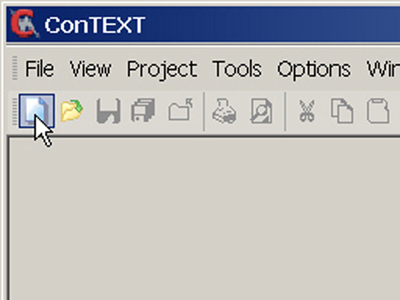
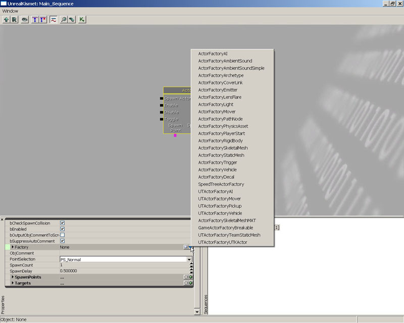
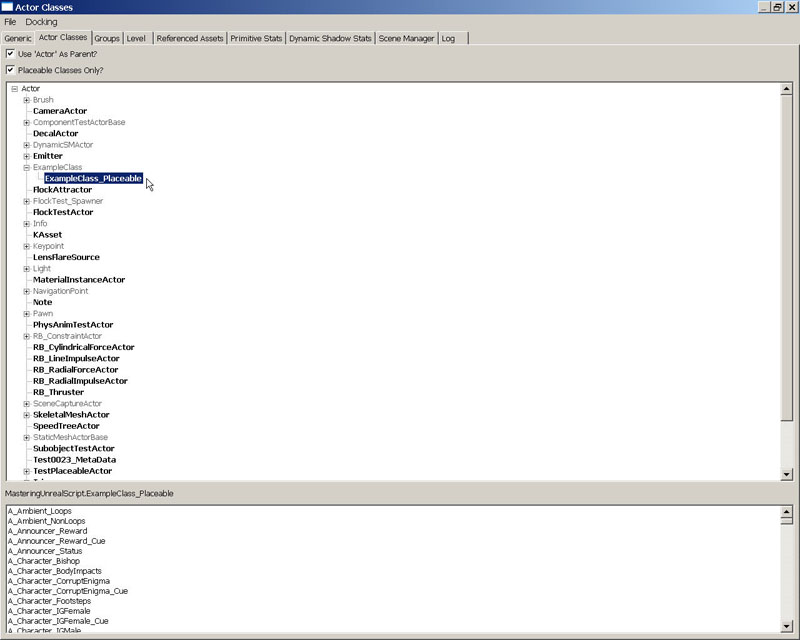
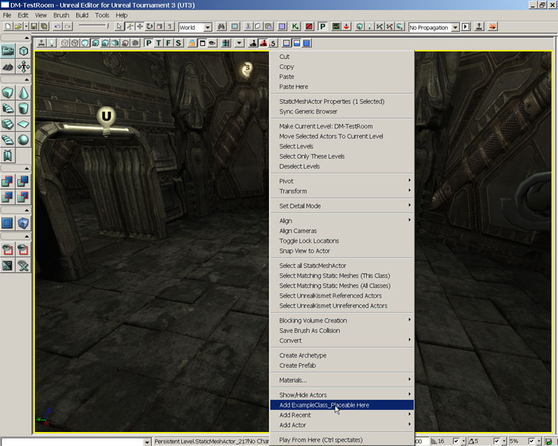
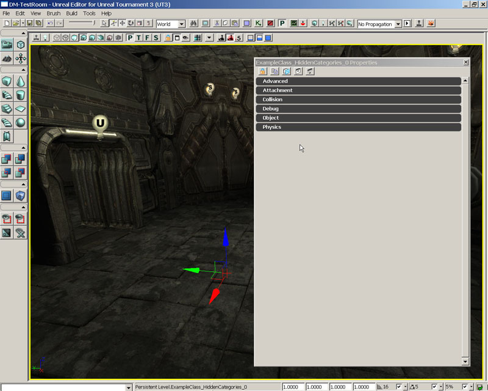
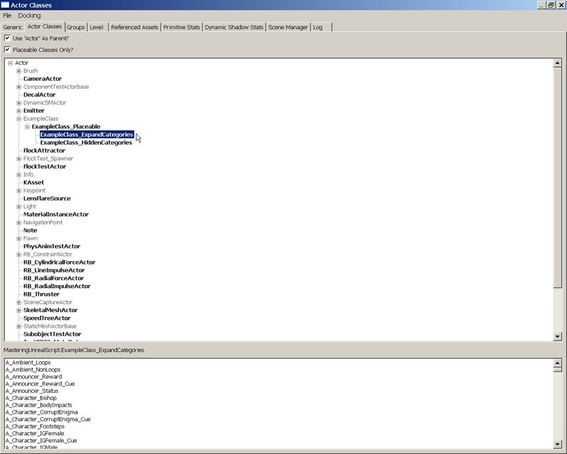
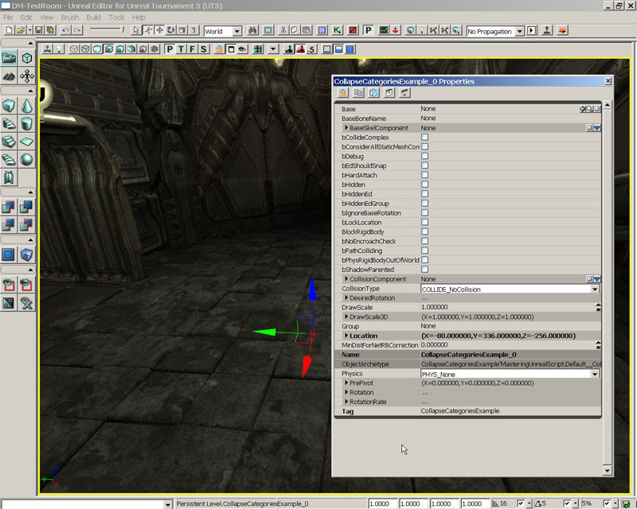

UDN
Search public documentation:
MasteringUnrealScriptClassesCH
English Translation
日本語訳
한국어
Interested in the Unreal Engine?
Visit the Unreal Technology site.
Looking for jobs and company info?
Check out the Epic games site.
Questions about support via UDN?
Contact the UDN Staff
日本語訳
한국어
Interested in the Unreal Engine?
Visit the Unreal Technology site.
Looking for jobs and company info?
Check out the Epic games site.
Questions about support via UDN?
Contact the UDN Staff
第三章–Unreal中的类
随着我们进一步深入的学习，我们开始了解UnrealScript语言，我们将开始查看UnrealScript中的类的实现。更加明确地说，您将开始学习UnrealScript中类代表什么，以及如何使用各种关键字来声明类，这些关键字决定特定类的处理方式。3.1概述
类基本上是用于指定一组属性、功能及行为的模板，可以扩展一个类来创建一个继承这些属性、能力及行为的新类，或者可以实例化这个类来创建一些可以在游戏中使用的对象，这些对象的这些属性具有唯一的值，并且每个实例之间是相互独立的。这对于Unreal和UnrealScript来说意味着什么哪？从本质上讲，UnrealScript中创建的每个类都是可以创建在游戏中使用的对象的游戏项。这包括从容易被玩家识别及可见的游戏项到那些很少被其它项所引用的在后台作为助手的项。一些示例是武器和车辆，以及为了达到在网络上复制这些属性值的目的、在游戏中使用的存储玩家重要属性的值的PlayerReplicationInfo类。3.2 NATIVE 对 非-NATIVE
从最基本的层次上讲，UnrealScript中有两种类型的类：native和非-native。Native类是一个具有native代码的简单的类，或者是使用引擎的native语言书写的代码，这里是C++。这不是说native类不能包含使用UnrealScript书写的代码，只是说native类中结合了C++代码。在游戏中出现的很多底层的类都是native类，因为它们有很多受益于native代码执行速度的复杂函数。非-native类是全部使用UnrealScript书写的。因为所有的类都是从native类Object继承而来，所以通过继承关系，这些非-native类有一些和它们相关的native代码，但是它们本身没有明显的native代码。您将要书写的所有类都是非-native类，因为创建native类需要重新编译引擎的源代码。3.3类声明
为了使用UnrealScript创建一个新的类，则必须创建一个包含一个类声明的UnrealScript文件。每个UnrealScript文件仅可以包含一个类声明，因此它代表Unreal中的一个单独的类。类声明是脚本的第一行，尽管有注释，在类的声明至少要指出要创建的类的名称以及这个类从哪个类扩展而来即它的父类。声明也可以包含一个或多个关键字或者类修饰符，这些我们将会在下面的部分进行讨论。以下是类声明的基本形式：class ClassName extends ParentClassName;使用这段代码作为模板，我们可以定义一个命名为PickupTruck，继承基类Vehicle的新类，如下所示：
class PickupTruck extends Vehicle;注意: 需要注意的是类的名称和UnrealScript(.uc)文件的名称必须是一样的，否则编译过程将会失败。
EXTENDS 关键字
您或许注意到在上面的类声明示例中使用了Extends关键字。这个关键字的实际意思是“继承于”。所有的类都必须扩展或继承于另一个类。唯一的例外是Object类，因为它是UnrealScript中所有其它类的基类。当一个类继承另一个类时，它包含了它继承的类的所有变量、函数、状态等。当使用UnrealScript创建一个类时，您通常会扩展Actor类或者它的其中一个子类，尽管有一些特殊的情况下您或许直接扩展Object类。指南 3.1您的第一个类声明
在本章中的指南都将是非常简单的，因为您将只是简单地书写类声明。这些类此时实际上不会做任何事情，因为我们现在关心的是如何创建类以及它们的声明是如何影响它们的外观和行为的。在第一个指南中，您将会创建一个继承于Actor类的类。一旦创建，您将会编译新的脚本，然后打开UnrealEd来查看引擎是否已经识别了那个类并把它显示在Actor类浏览器中。 1. 如果还没有打开ConTEXT，那么打开它。 2. 通过重File(文件)菜单中选择New(新建)或者按下工具条上的New File按钮来创建一个新的文件。
图片 3.1 –New File (新建文件)按钮. 3. 使用Select Active Highlighter(选择激活的轮廓)下拉列表选择您已经安装的语言轮廓。

图片 3.2 –Select Active Highlighter(选择激活的轮廓) 下拉列表菜单。 4. 在新的脚本文件的第一行上，输入以下文本：
class ExampleClass extends actor;这样，便完成了类的声明，并且从技术上讲它构成了整个新的类的创建。 5. 把文件保存在前一章创建的目录..\Src\MasteringUnrealScript\Classes中。将新的脚本文件命名为ExampleClass.uc，使其和新类的名称相匹配。 6. 运行Make命令行开关来编译脚本。正如在前一章所讲的，您可以使用您其他的选择来完成这个步骤。一旦成功地编译了脚本，启动UnrealEd。 7. 如果还没有打开Generic Browser(通用浏览器)，那么打开它并切换到Actor类标签。您应该注意到ExampleClass没有列在类的层次树中。那是因为启用了Placeable Classes Only(仅可放置的类)?选项，而ExampleClass类是不可放置的。

图片 3.3 –选择了Placeable Classes Only(仅可放置的类)?选项 取消选择Placeable Classes Only(仅可放置的类)?选项，现在您应该可以看到新的ExampleClass类已经列在了层次树中。
图片 3.4 –取消Placeable Classes Only(仅可放置的类)?选项，ExampleClass 类显示在了层次结构中。 8. 我们可以通过尝试在地图中放置ExampleClass类的实例来验证这种情况。打开DVD中提供的地图DM_TestRoom.ut3。在Actor类别浏览器中选择ExampleClass，并在透视口中右击房间的地面。如果这个类是可以放置的，那么将关联菜单中将会出现一个Add ExampleClass(添加ExampleClass)选项。您可以清楚地看到没有出现这个选项，从而证实了这个类是不可放置的。

图片 3.5 –没有添加ExampleClass 类的实例的选项。 您现在已经看到了如何声明作为Unreal类层次结构一部分的类。这个类从本质上讲只不过是Actor类的一个副本，并且不能把它放置到地图中。在下一个指南中，将会详述您已经在这个指南中学习的东西，力求创建一个可以放置在关卡中的类，这是在虚幻引擎中的一个非常基本但非常重要的脚本编写的概念。如果没有可以放置在地图中的项，那么设计人员基本上没有办法工作。 <<<<指南结束>>>>
3.4类的修饰符
类的修饰符是告诉编译器 和/或 引擎本身一些关于这个类的各方面信息的关键字。这些关键字如下所示：NATIVE(PACKAGENAME)
Native修饰符把类标记为具有相关native代码的类。这意味着引擎将会查找那个类的C++声明及实现。如果这不存在，将会发生错误。Native类的特性是它是唯一可以声明native函数及实现native接口的类。此时您可能不理解它的意思，因为我们还没有讨论函数和接口，但是我们将会在后面对其进行详细介绍，那时候前面的声明语句的意思应该就清晰了。 (PackageName[包名称])的名称指那个类所在的包的名称。编译器使用这个名称来自动地在C++头文件PackageName +Classes.h生成那个类的声明。换句话说，如果包的名称按照以下的方式指定：Class NativeClass extends Actor Native(MasteringUnreal);这个类的native声明将会被放置在MasteringUnrealClasses.h文件中。
NATIVEREPLICATION
NativeReplication修饰符仅在native类中有用，意味着属于那个类的变量的值是通过native代码进行复制。DEPENDSON(CLASSNAME[,CLASSNAME,...])
当类具有依赖时，即当要求某些类在同一个包中的其它类之前编译时使用DependsOn修饰符来决定编译顺序。在圆括号中的类将会在修饰符所在类的前面进行编译。在当前的类需要访问声明在另一个类中的结构体或枚举值时，这是有用的。如果没有先编译当前类，编译器将不知道那个结构体或枚举值，从而会抛出错误。通过添加DependsOn修饰符，可以确保先编译另一个类，编译器将会知道那个结构体或枚举值。ABSTRACT
Abstract修饰符告诉引擎不能把那个类放置到关卡中或者以任何方式实例化那个类。它用于作为其它的大量类的基类，但是在游戏本身的关卡中没有直接应用。由于Unreal的面向对象特性，从可扩展性的角度来讲，有一些在游戏本身没有实际使用的类是完全可以并值得的。这些类作为具有某些共同特性的几个类的基类。为了解释这一点，想象您想向您的游戏中添加几个车辆。所有的车辆都有一些共同的东西，比如它们可以移动，它们可以具有武器，它们可以有驾驶员等。所以可以通用性的代码集成到一个单独的基类Vehicle中来处理车辆的运动、武器的使用以及驾驶员的位置。这Vehicle基类可以使用Abstract修饰符，靠它本身，它不能真正地起到作用，因为没有为它分配网格物体或实际的武器，所以永远都不能在游戏中使用它。但所有的从Vehicle类扩展而来的独立的车辆都会在它们的类中为每个特定的车辆分配网格物体和武器，这些将会在游戏中使用。DEPRECATED
Deprecated修饰符用于声明类为不再使用的类。无论以任何方法第一次创建类时，都不会使用这个关键字。有时候为了使得另一个类或方法来执行需要的函数则可能不再使用一个类。当这种情况发生时，旧的类声明将会变为使用Deprecated修饰符。一旦重新编译后，游戏中使用的这个类的任何实例将会继续在编辑器中进行加载，但是将会出现警告，并且将不再允许对其进行保存。这将会强制设计人员使用新的类替换现有的类。所有扩展Deprecated类的类都将会继承Deprecated修饰符，并且也将被认为是Deprecated类。TRANSIENT
Transient修饰符阻止类被保存到磁盘。它用于在游戏中或者其它任何时候都不应该被保存的类。这个关键字将会被这个类的子类所继承。NONTRANSIENT
NonTransient修饰符允许覆盖从父类继承而来的Transient关键字，从而允许把这个类保存到磁盘上。CONFIG(ININAME)
Config修饰符指出任何声明为Config或GlobalConfig的类中的任何变量都会被写到一个和类的名称相匹配的.ini文件中。当游戏退出时，将会存储这些变量的值；当游戏开始时，将会读入这些变量的值。 作为示例，我们取出了以下类片段：class MyScript extends MyParentScript Config(MyConfig); Var Config Int Score; Var Config String Name; ...这将会导致创建一个MyConfig.ini文件，文件中包含了类似于以下信息的行：
... Score=5 Name=Gorge ...当然，这里显示的值是编造的。实际的值是根据游戏过程中发生的事以及Name变量所代表的东西而变化。当下一次运行游戏时，这些值将会被读入，并且分别作为Score 和 Name变量的值。 扩展当前类的任何类都会继承这个关键字，并且不能消去这个关键字。但是，通过使用新的iniName重新声明Config修饰符，子类可以覆盖要使用的.ini文件的名称。这意味着在使用Config修饰符时必须有一定的计划，因为它使您可以不必把许多不必要的变量写到文件中。 也有一些用作为IniName的保留名称，它们会导致把变量及它们的值写到某些已有的.ini文件中。有以下保留名称：
Engine
这个名称将会使得这个类的变量的值被写入到[GameName]Engine.ini文件中，这里的[GameName]代表了游戏的名称。在虚幻竞技场3中，这个文件是UTEngine.ini。Editor
这个名称将会使得这个类的变量的值被写入到[GameName]Editor.ini文件中，这里的[GameName]代表了游戏的名称。在虚幻竞技场3中，这个文件是UTEditor.ini。Game
这个名称将会使得这个类的变量的值被写入到[GameName]Game.ini文件中，这里的[GameName]代表了游戏的名称。在虚幻竞技场3中，这个文件是UTGame.ini。Input
这个名称将会使得这个类的变量的值被写入到[GameName]Input.ini文件中，这里的[GameName]代表了游戏的名称。在虚幻竞技场3中，这个文件是UTInput.ini。PEROBJECTCONFIG
PerObjectConfig修饰符和Config关键字类似，因为它声明那个类使用.ini文件来存储值。在这个实例中，类的每个独立实例的值存储在标题指定的单独的部分中，如下所示：[ObjectName ClassName]ObjectName代表了类的实例的名称，ClassName代表了要实例化的类的名称。在这个标题下是一个包含在这个类中的Config变量的列表和类的特定实例的值。这个信息由于初始化类的多个实例，比如在UIScene中产生一个列表。这个修饰符会被当前类的任何子类所继承。
EDITINLINENEW
EditInlineNew修饰符声明了这个类可以有一个从UnrealEd的Property Window(属性窗口)中直接创建的新的实例。这可以用于抽象的基类中，从而允许设计人员为特定的属性选择要在UnrealEd中使用的对象的类型。一个示例是Actor Factory Kismet动作。它允许设计人员根据需要产生的对象类型来选择使用哪种类型的ActorFactory。动作的类中的属性是ActorFactory类型，ActorFactory本身是没有任何意义的，因为它是一个抽象类没有任何特定功能。但可以通过具有特定功能的几个其它的类来扩展它。因为ActorFactory声明为EditInlineNew，并且这个关键在将会被所有的子类所继承，所以在UnrealEd中可以把属性设置为这些子类中的任何一个，从而使得动作是非常通用的。
图片 3.6 –在Actor Factory 序列动作中创建一个新的ActorFactory 对象。
NONEDITINLINENEW
NotEditInlineNew修饰符可以从类中删除继承的EditInlineNew关键字。这仅在父类声明为EditInlineNew是有效。PLACEABLE
Placeable修饰符声明可以把类放置到UnrealEd中的地图、UIScene或Kismet序列中。关卡设计人员可以访问的及可以直接在UnrealEd中应用的任何游戏项都应该指定这个关键字。这个修饰符可以被子类所继承。指南 3.2 制作一个可以放置的Actor
在这个指南中，您将会创建一个继承在前一个指南中创建的ExampleClass的新类。但是，这个类可以放置到UnrealEd中的地图中。 1. 如果ConTEXT还没有打开，打开它。 2. 再次通过从File(文件)菜单中选择New(新建)或者通过按下工具条上的New File(新建文件)按钮新建一个文件。 3. 使用Select Active Highlighter(选择激活的轮廓)来选择您已经安装的UnrealScript轮廓。 4. 在新的脚本文件的第一行写入以下代码：class ExampleClass_Placeable extends ExampleClass注意，这次没有使用分号来结束这行。这是因为声明还没有结束。我们将使用一个修饰符来定义我们希望这个类具有的某些特殊行为。 5. 按下回车键到下一行，然后按下Tab键来缩进行。添加以下代码：
placeable;这将会把这个新类声明为允许在UnrealEd中把它放置的地图内的类，尽管它的父类ExampleClass不能被放置在地图中。最终的脚本有以下文本组成：
class ExampleClass_Placeable extends ExampleClass placeable;6. 使用和类名相匹配的文件名ExampleClass_Placeable.uc把这个文件保存到..\Src\MasteringUnrealScript\Classes目录中。 7. 运行Make命令行开关来编译脚本。正如在前一章所讲的，您可以使用您选择的方法来完成这个操作。一旦已经成功地编译了脚本，然后启动UnrealEd。 8. 如果还没有打开Generic Browser(通用浏览器)则打开它，并切换到Actor类别标签。现在即使在选中Placeable Classes Only(尽可放置类别)?的情况下，您应该也可以看到类在层次树中的ExampleClass类，因为它已经具有了一个可以放置的子类，它旁边的加号(+)暗示了这一点。

图片 3.7 – 选中Placeable Classes Only(尽可放置类别)?的情况下，显示了ExampleClass。 点击加号标志来显示它的子类，现在您应该可以看到您刚才创建的ExampleClass_Placeable类显示为粗体，这意味着它可以被放置到地图中。

图片 3.8 –ExampleClass_placeable 列在层次树的ExampleClass下面 9. 为了保证所有的事都能正常工作；让我们来在地图中放置一个ExampleClass_Placeable类的实例。打开DVD中提供的DM_TestRoom.ut3地图，在Actor类别浏览器中选择ExampleClass_Placeable，并在透视口中右击屋内的地面。从关联菜单中选择Add ExampleClass_Placeable(在这里添加ExampleClass_Placeable)。尽管您现在已经在地图中成功地创建一个实例，但是当选中它时除了控件变换的展现外，您看不到任何可见的构成部分。

图片 3.9 –类的实例可以被添加到地图中。 <<<< 指南结束 >>>>
NOTPLACEABLE
NotPlaceable用于删除类的可以在UnrealEd中放置的功能。这可以在声明为Placeable的类的子类但却不允许将该子类放置在UnrealEd中的类上使用。HIDEDROPDOWN
HideDropDown修饰符使得类不会显示在UnrealEd中的类-类型下拉列表中。比如，这种类型的列表可以用于使设计人员选择一种用于可破坏对象的特效。通过使用HideDropDown关键字，可以防止某个特定的类出现在那个列表中。HIDECATEGORIES(CATEGORY[,CATEGORY,...])
HideCategories修饰符允许在UnrealEd中的属性窗口中隐藏类的实例属性的某些特定组及种类。这会隐藏不必要的属性，使得属性窗口免于混乱，妨碍设计人员查看属性。这个关键字和它的隐藏的目录会被它的所有子类所继承。指南 3.3 隐藏属性的种类
既然您已经创建了一个可以作为actor添加到地图中的新类，那么我们将开始看一下如何进行操作，在UnrealEd中类的属性是如何呈现给设计人员的。在这个指南中，我们通过隐藏某些种类的属相来决定那些属性将要显示给设计人员。 1. 如果ConTEXT还没有打开，打开它。 2. 再次通过从File(文件)菜单中选择New(新建)或者通过按下工具条上的New File(新建文件)按钮新建一个文件。 3. 使用Select Active Highlighter(选择激活的轮廓)来选择您已经安装的UnrealScript轮廓。 4. 在新的脚本文件的第一行写入以下代码：class ExampleClass_HiddenCategories extends ExampleClass_Placeable和前一个指南中的情况一样，没有使用分号来结束这行是因为声明还没有结束。从声明的这行开始，我们可以看到新的类将会自动设置为可以放置在地图中，因为扩展了声明为placeable(可放置)的ExampleClass_Placeabl类。 5. 按下回车键到下一行，然后按下Tab键来缩进行。添加以下代码：
HideCategories(Movement) HideCategories(Display);您或许会想我们从哪里获得了种类名称Movement 和 Display哪？在声明Actor类的属性时顺便把它分为了几个种类。因为这个类直接地继承了Actor类，所以它包含了这些属性和种类。我们简单地告诉UnrealEd不要显示Movement或Display类别以及它们包含的属性。 完整的脚本包含了以下文本：
class ExampleClass_HiddenCategories extends ExampleClass_Placeable HideCategories(Movement) HideCategories(Display);6. 使用和类名相匹配的文件名ExampleClass_HiddenCategories.uc把这个文件保存到..\Src\MasteringUnrealScript\Classes目录中。 7. 运行Make命令行开关来编译脚本。正如在前一章所讲的，您可以使用您选择的方法来完成这个操作。一旦已经成功地编译了脚本，然后启动UnrealEd。打开DVD中提供的地图DM_TestRoom.ut3。 8. 如果还没有打开Generic Browser(通用浏览器)则打开它，并切换到Actor类别标签。当完全展开ExampleClass的层次结构后，您会看到ExampleClass_HiddenCategories类列在ExampleClass_Placeable类的下面。
图片 3.10 –ExampleClass_HiddenCategories 类列在ExampleClass_Placeable 类的下面。 9. 在Actors类别浏览器中选择ExampleClass_Placeable，然后在透视口中右击地面。从关联菜单中选择Add ExampleClass_Placeable here(把ExampleClass_Placeable添加到这里)。按下F4来打开属性窗口，您将会看到属性的的所有种类，包括Movement 和 Display种类。

图片 3.11 –ExampleClass_Placeable actor的属性窗口 10. 现在，在Actor类别浏览器中选择ExampleClass_HiddenCategories，并在透视口中右击房间的地面，从关联菜单中选择“添加ExampleClass_HiddenCategories到这里”。再次按下F4来打开属性窗口。您应该注意到尽管这个类包含了和它扩展的类ExampleClass_Placeable一样的属性，但是却没有Movement 和 Display种类。这是因为在类声明中使用了HideCategories修饰符。

图片 3.12 –ExampleClass_HiddenCategories actor的属性窗口 <<<< 指南结束 >>>>
SHOWCATEGORIES(CATEGORY[,CATEGORY,...])
ShowCategories具有和HideCategories关键字完全相反的效果。它会使得父类中已经使用HideCategories修饰符隐藏的特定种类显示出来。如果在父类中没有使用HideCategories修饰符，那么这个关键字将没有效果，就像默认情况下显示所有种类一样。AUTOEXPANDCATEGORIES(CATEGORY[,CATEGORY,...])
AutoExpandCategories修饰符允许当在UnrealEd的属性窗口中查看属性时默认地完全展开某些种类的属性。如果某个特定种类中的属性会被频繁地使用时，这是非常有用的，它可以使得设计人员免得每次在查看属性时频繁地手动地展开那个种类。指南 3.4自动地展开属性的种类
继续UnrealEd中类的属性是如何显示给设计人员的操作，现在我们将会指出哪些种类的属相会在属性窗口中自动地展开。 1. 如果ConTEXT还没有打开，打开它。 2. 再次通过从File(文件)菜单中选择New(新建)或者通过按下工具条上的New File(新建文件)按钮新建一个文件。 3. 使用Select Active Highlighter(选择激活的轮廓)来选择您已经安装的UnrealScript轮廓。 4. 在新的脚本文件的第一行写入以下代码：class ExampleClass_ExpandCategories extends ExampleClass_Placeable再次我们将以同样的方式使得ExamplEClass_HiddenCategories继承ExampleClass_Placeable类，但是这次我们将会展开Movement 和 Display种类而不是隐藏它们。 5. 按下回车键到下一行，然后按下Tab键来缩进行。添加以下代码：
AutoExpandCategories(Movement,Display);我们没有为每个种类都指定单独的修饰符声明，而是对多个种类使用了一个修饰符声明。您使用哪个方法可以完全根据您的个人偏好而定。因为您已经知道了如何使用任何一种方法，我们从这以后将会一直使用单一修饰符声明的方法，因为它书写起来比较快。 完整的脚本包含以下文本：
class ExampleClass_ExpandCategories extends ExampleClass_Placeable AutoExpandCategories(Movement,Display);6. 使用和类名相匹配的文件名ExampleClass_ExpandCategories.uc把这个文件保存到..\Src\MasteringUnrealScript\Classes目录中。 7. 运行Make命令行开关来编译脚本。正如在前一章所讲的，您可以使用您选择的方法来完成这个操作。一旦已经成功地编译了脚本，然后启动UnrealEd。打开DVD中提供的地图DM_TestRoom.ut3。 8. 如果还没有打开Generic Browser(通用浏览器)则打开它，并切换到Actor类别标签。当完全展开ExampleClass的层次结构后，您会看到ExampleClass_ ExpandCategories类 和ExampleClass_HiddenCategories类一同列在ExampleClass_Placeable类的下面。

图片 3.13 - ExampleClass_ExpandCategories 列在了ExampleClass_Placeable 类的下面。 9. 在Actor类别浏览器中选择ExampleClass_ ExpandCategories，并在透视口中右击房间的地面，从关联菜单中选择“添加ExampleClass_ ExpandCategories到这里”。再次按下F4来打开属性窗口。当属性窗口打开时，您回答可能到所有的属性类别，特别是Movement 和 Display处于完全的展开状态，从而使得这些类别中的属性是可见的。

图片 3.14 –Movement 和 Display自动地处于展开状态。 <<<< 指南结束 >>>>
COLLAPSECATEGORIES
CollapseCategories修饰符在显示这个类的可编辑属性时会使得UrealEd中的属性窗口提前使用种类。所有的可编辑变量都会按照字母顺序排列为单独的一列。这个关键字会被这个类的子类所继承。
FIGURE 3.15 –CollapseCategories 修饰符的效果。
DONTCOLLAPSECATEGORIES
DontCollapseCategories否定了从父类继承的CollapseCategories修饰符。这意味着这个关键字可以用于强制这个类的可编辑变量显示在它们指定位于的种类中。WITHIN CLASSNAME
Within修饰符指出这个类的实例仅可以在ClassName类的一个实例的内部进行创建，意味着在创建时类型ClassName的对象必须作为新的实例的Outer属性。这个修饰符的一个实例是MaterialExpression，因为没有原因会使得它存在于一个Material(材质)之外，所以使用Within修饰符来声明这个类，Material 类名使得MaterialExpression不可能被创建在处Material之内的其它地方。INHERITS(CLASSNAME[,CLASSNAME,...])
Inherits修饰符使得类可以扩展或继承多个父类。这个修饰符仅应用于native类。当指定多个要继承的类时，这个可以在一个单独的Inherits语句中完成也可以为每一个要继承的类分别地使用Inherits语句。IMPLEMENTS(CLASSNAME[,CLASSNAME,...])
Implements修饰符允许类使用或实现一个或多个接口。我们将会在后面的章节中讨论关于接口及如何使用它们的信息。当我们指定多个要实现的接口时，可以通过一个单独的Implements声明或者为每个要实现的接口分别使用一个Implements声明语句来实现。NOEXPORT
NoExport修饰符使得这个类的native声明排除在自动生成的C++头文件之外。当使用这个修饰符时，必须在单独的头文件中手动地创建native类声明。这个修饰符仅适用于native类。3.5 总结
类是在UnrealScript中我们进行任何事情的基础。没有它们，将不可能实现虚幻竞技场3中的有趣的丰富的游戏性。尽管在这章中您创建的类不是非常地有用，但是既然您知道了如何声明您自己的新类，我们可以开始关注于实现产生有趣且丰富的游戏性的功能。那将是我们在这本书接下来的章节的目标：使用UnrealScript在Unreal世界中创建新的有趣的情形。附加文件
- DM-TestRoom.rar: DM-TestRoom.ut3 map
- Chapter3_CompleteSource.rar: 完整的源文件。